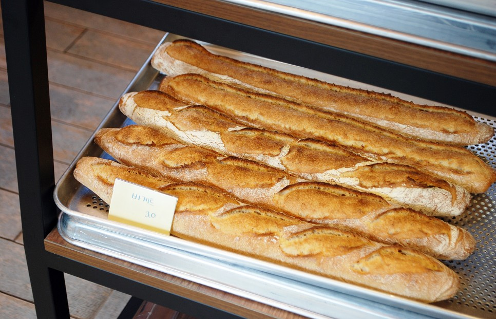
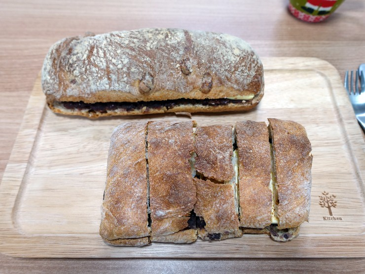

바게트

겉은 바삭 속은 촉촉한 바게트는 가운데 야채나 치즈를 넣어 샌드위치를 해 드셔도 맛있습니다.
치즈 치아바타

에멘탈 치즈와 체다 치즈가 들어가 짭조롬한 맛의 치아바타 입니다.
단호박 깜빠뉴

안에는 크림치즈와 직접 삶은 단호박을 듬뿍 넣고 겉에는 검은깨와 호박씨를 입혀 달달하고 고소한 빵입니다.
무화과 깜빠뉴

레드 와인에 절인 말린 무화과를 아낌없이 넣어 무화과가 쫀득하게 씹히는 빵입니다.
앙 브레첼

프레첼에 직접 끓인 팥과 고메 버터를 넣어 구수하고 부드러운 빵 입니다.
앙버터

치아바타를 한번 더 구워 바작하게 씹히는 맛이 좋은 앙버터 입니다.